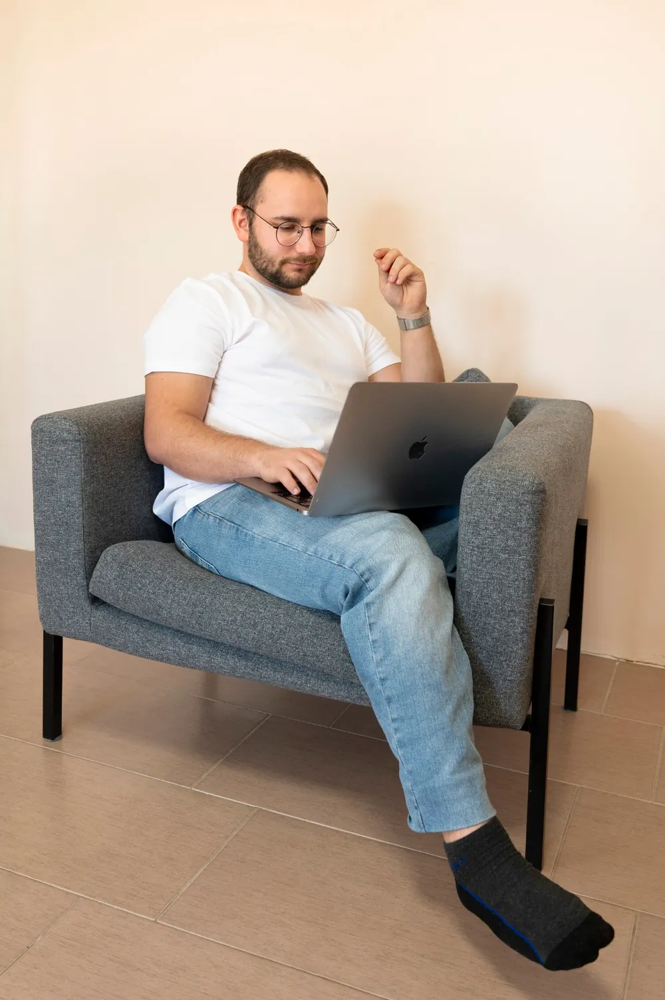
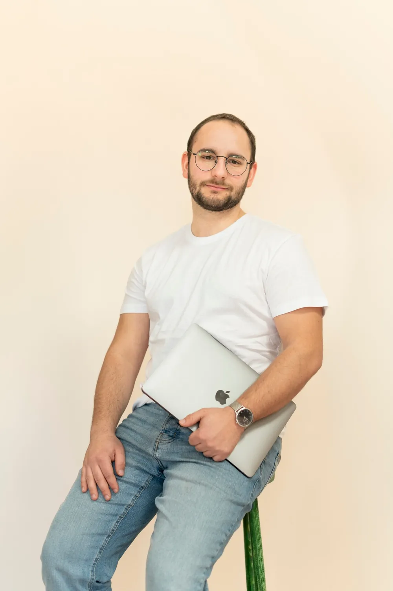

Az új kor I. törvénye
A követőszám a régi kor relikviája.
10 000 követő, 40 kedvelés — ismerős? Az új korban minden poszt tiszta lappal indul. Nem az számít, hányan követnek, hanem hogy hányan nézik végig.

Social Stream — marketing az érdeklődés korában
Egy korszak véget ért — a feed már nem azt mutatja, kit követsz, hanem azt, ami valóban érdekel. Videó tartalom, social jelenlét és performance hirdetések egy growth rendszerben, ami az új kor szabályaira épült.
I.fejezet — Korszakváltás
Tíz évig az számított, hány követőd van. Ez a kor véget ért. A feed már nem azt mutatja, kit követsz — hanem azt, ami valóban érdekel. Az algoritmus minden egyes megjelenést újraoszt: nem a múltad alapján, hanem aszerint, hogy ma érdekes vagy-e.
A legtöbb vállalkozás még a régi kor szabályaival játszik: posztol és reménykedik. Mi nem láthatóságot építünk, hanem rendszert, ami az érdeklődést bevétellé alakítja. És ez minden számon látszik.
Az új kor I. törvénye
10 000 követő, 40 kedvelés — ismerős? Az új korban minden poszt tiszta lappal indul. Nem az számít, hányan követnek, hanem hogy hányan nézik végig.
Az új kor II. törvénye
Minden megjelenésért a legjobb alkotókkal versenyzel, nem a konkurenciáddal. Ami érdekes, azt a platform ingyen viszi el milliókhoz. Ami unalmas, azt büdzsével sem lehet megmenteni.
A régi kor
Az új kor III. törvénye
Az újé: adatból tudni, mi érdekli az embereket, és rendszert építeni, ami az érdeklődést bevétellé alakítja.
II.fejezet — Amivel az új korban győzni lehet
Nem csak hirdetések — a teljes online jelenlétedet lefedjük, egyetlen csapattal, az új kor szabályaira épített rendszerben.
Hook-ok, kreatív irány, gyártás — a kampány motorja a kreatív. Ezt mi is elkészítjük, a koncepciótól a kész videóig.
Feed, Stories, Reels, TikTok — egységes stratégiával, egységes hanggal. Content calendar, community management, copywriting.
Meta, TikTok és Google kampányok, amik nem csak elköltik a büdzsét — hanem ROAS-t termelnek. Napi optimalizálás, A/B tesztelés, skálázás.
Gyors, mobilra optimalizált landingek és weboldalak, amik konvertálnak — nem csak jól néznek ki.
Lead-követés, email szekvenciák, automatizált tölcsérek. Egyszer beállítjuk — utána dolgozik helyetted.
Stratégiai szintű marketing tanácsadás — kampánystratégia, funnel audit, piaci pozicionálás. Partnerek vagyunk, nem kivitelezők.
III.fejezet — Feljegyzések az új korból
Valódi kampányok, valódi dashboardok — feljegyzések arról, mi történik, ha egy márka az új kor szabályaival kezd játszani.

Feljegyzés № I
81×
ROAS — legjobb eredmény, e-commerce kampányban
Esettanulmány elolvasása →Feljegyzés № II
79M Ft
Bevétel egy hét alatt, B2B Meta kampányból
Esettanulmány elolvasása →
Feljegyzés № III
23×
ROAS ünnepi kampányban — 8M+ Ft bevétel
Esettanulmány elolvasása →Feljegyzés № IV
105Ft
Jelentkezőnként — ~5700 jelentkező 600K Ft költésből
Esettanulmány elolvasása →A műhely — itt készül az új kor tartalma


Tanúságok az új korból
★★★★★„Egyszer már leállítottuk a Facebook hirdetéseinket, mert egyszerűen nem érte meg. Miután megismertük Olivért, adtunk egy újabb esélyt. Már az induláskor is volt vásárlás — olyan számokat produkált, amit eddig nem is láttunk.”
★★★★★„Profi csapatot szerettem volna az indulás után. Mind Facebook/Instagram, mind weboldal és hirdetés területén profi kampányokat készítenek. Rövid időn belül jöttek az eredmények — nekem semmi dolgom nem volt velük.”
★★★★★„A Social Stream profi módon készítette el a weboldalam. Mindenkinek tetszett az igényes és könnyen áttekinthető tartalom! Csak ajánlani tudom őket.”
★★★★★„Azt hittük, a Facebook a fiataloknak és a webshopoknak való — mi csarnokot építünk. Aztán egy hét alatt annyi ajánlatkérésünk lett, mint korábban fél év alatt összesen.”
★★★★★„Minden decemberben rettegtünk a hirdetési áraktól. Idén először éreztük úgy, hogy az ünnepi szezon nekünk dolgozik — nem ellenünk.”
★★★★★„Pár száz jelentkezőre számítottunk a webinárra. Amikor a számláló majdnem 5700-nál állt meg, alig hittük el, hogy ez ugyanabból a büdzséből jött ki.”
Az új kor mesterei
Alapító & Kampánystratéga
Ő olvassa az új kor szabályait: adatból dönti el, mibe fektessük a figyelmet — és miért fogja azt bárki megnézni.

Kreatív & Tartalomgyártás
Ami megállítja a hüvelykujjat, az ő keze munkája. Hook-ok, forgatás, kreatív irány — az új kor nyelvén.

Produkció & Szerkesztés
A gyártás motorja. Nála áll össze nyersanyagból kész tartalom — vágás, ritmus, precizitás, határidőre.

Az alapító
Dánia tanulmányaim alatt szereztem meg az első ügyfelemet. Aztán Meta Marketing Pro-ként közelről láttam, hogyan gondolkodnak a legkomolyabb márkák, amikor valódi pénz van a kampányban — és azt is, ahogy a régi szabályok a szemünk előtt érvényüket vesztik. Nem receptek, nem formulák, hanem rendszerek, adatok, és a platform valódi ismerete.
2022-ben azért alapítottam a Social Streamet, mert ezt a gondolkodásmódot itthon nagyon kevés vállalkozás kapta meg eddig. Azóta 300M+ Ft büdzsét kezeltünk, és specialistákból, fanatikusokból álló csapatot építettem magam köré. Minden egyes kampányban a szakma szeretetét, valamint ugyanazt a szemléletet visszük bele.
— Olivér, Alapító
30 perces ingyenes audit — megnézzük a kampányaidat, a landing page-edet, az ajánlatodat. Megmondjuk őszintén, hol játszol még a régi kor szabályaival — még fizetés előtt.
Havonta legfeljebb két új partnerrel indulunk el — ennyit bír el a minőség · Nincs sablonajánlat · Nincs kötelezettség